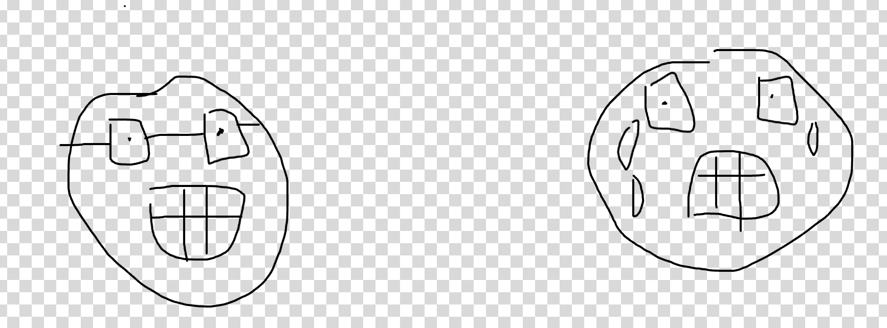
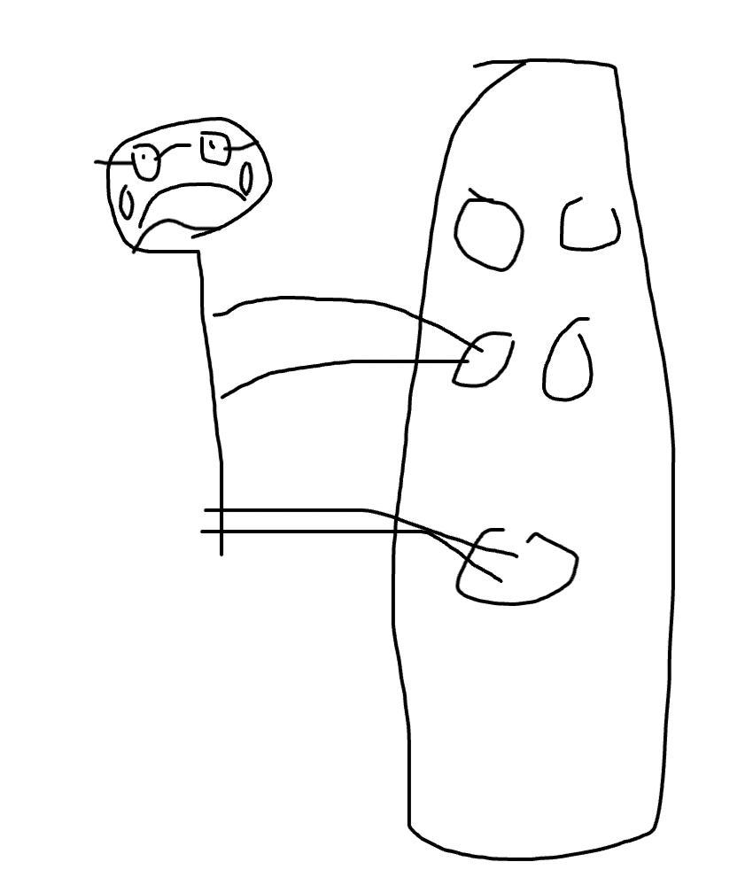
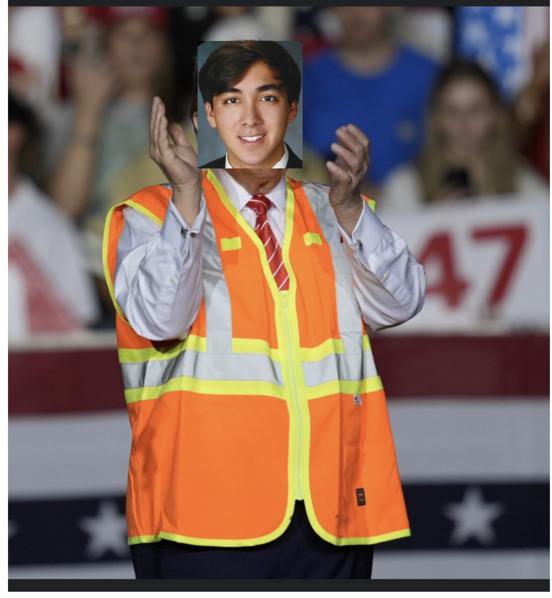
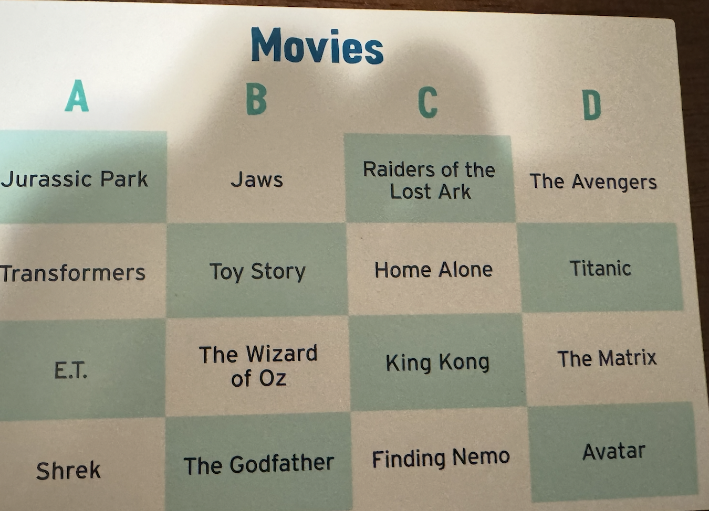
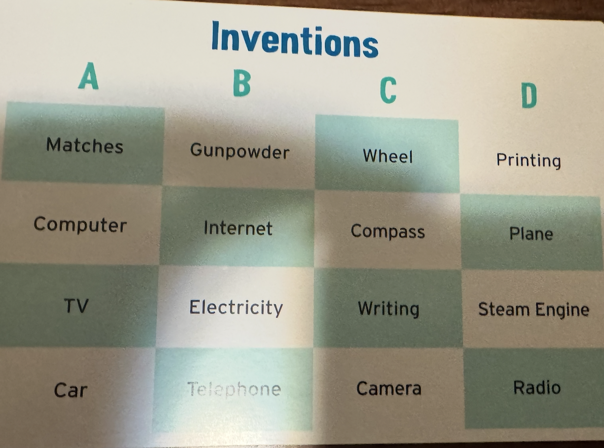
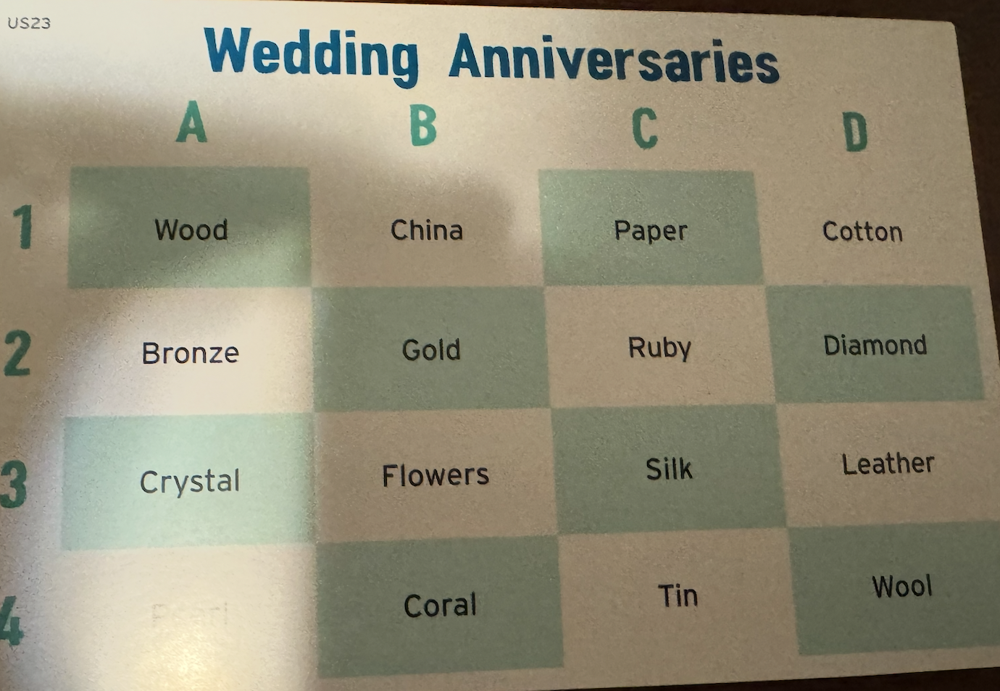
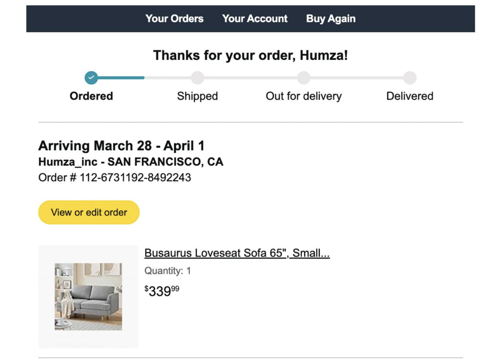

Episode 14
Monday
Today is the first day of my new job. As is typical the first day is a lot of getting set up with my new dev environment and learning more about what I’d be working on. Given that this is in the healthcare space which I don’t know a lot about there is a lot to take in. The people are all really nice though and this definitely seems like the kinda small startup where everyone knows everyone. People do definitely stay at the office longer than my old company. A bunch of us were in the office having dinner around 7 and I left around 8 with folks still there after I left. I make some reasonable initial progress on my first project and then just go home and chill.
Tuesday
I continue working on my first project and learning the ropes. Not much else to say really.
Wednesday
Work continues to progress. While I’m at work I get a message from a girl I went on a Hinge Date with a year ago (and she ghosted me afterwards), asking about my experience with trash pickup. It turns out that she is taking a new role with with the Civic Joy Fund. The Civic Joy Fund is the organization that runs trash pickup and wants to talk to me about my experience with it. We agree to call Thursday around 7 to talk about it. After work I go to run club. Todays run is a bit less than usual at 4 miles and its in North Beach rather than Embarcadero. Without a certain someone to rage push me I had a casual run. The annoying thing about running in North Beach as opposed to Embarcadero is that the traffic lights provide some unwanted stop and start.
After run club I go to my friends poker night. I’m not too good at poker but with a $5 buy in I manage not to lose any money at least :D. It may also have helped that I decided not to play because I just came for the vibes.
My friends take a quick break and smoke some cuban cigars. Unfortunately I absolutely HATE the smell of smoke and decide to quickly vacate the room. Like seriously I can’t describe the degree to which I hate smoking. This is a before and after of what its like for me

As I’m inhaling the smoke I flash back to a friends birthday party from last year when we are gathering around a fire and the smoke there forces me to retreat and stay inside the whole time. Much like last year the eucalyptus nearby winds up being my salvation.
Between that and my fatigue I decide its time for me to pull a disappearing act and head home.
Thursday
Work today progresses as normal. After work as I’m walking home from the Muni station I learn there is a night market over by Cole Valley. Its not a particularly big night market but its still a good time. As I walk by the night market I notice that there is a Civic Joy Fund booth and I see the girl in question so we wind up talking there. She seems really excited about trash pickup and how to run it so I talk about my experience with it and think about how we can get the word out. I also wind up helping her out with tabling and advertising the trash pickup to passerby. My magic tricks wind up being surprisingly effective at getting people intrigued.
Friday
Work today continues and I put up some PRs toward the end of the day. One thing I didn’t mention about the office is that we have a Switch and some game cube controllers so at the end of the day we play some Smash. My coworkers are pretty good but I manage to hold my own.
After playing Smash we go climbing over at Mission Cliffs. Unlike Smash I am absolutely terrible at climbing. I try do a V0 and it bombed harder than my standup

One of my coworkers who I just met today jokingly said she’d judge me for my performance and by the end I’m guessing she must think I’m terrible.She also jokingly asked if I was prepared to be emasculated but as someone who put no real stock in my climbing skills I was well prepared to be shown up by anyone and everyone regardless of gender.
After climbing I go to get KBBQ with a friend. Hanging out with the friend was great but I realized that I’ve been getting KBBQ a bit too much and I think I need to cut back and skip a week or two.
Saturday
Today I start off with trash pickup as per usual. Its a special trash pickup though as one of my friends Blair hit is 100th trash pickup!! I get some sugar cookies to celebrate and make an announcement! Unfortunately I learn that he doesn’t really like being gifted food but he is still touched that a bunch of us came and wished him happy 100th.

Happy 100th trash pickup Mr. President!
While trash pickup is happening some of my other friends go for a run and wind up at the IKEA Downtown. I try to see if I can catch up to them while walking from South Mission.
I enlist one of my other friends who lives near by to walk with me there and he in turn tells me the merits of buying a beard trimmer.
When we get to the IKEA it turns out they aren’t there so I go home and start setting up for pasta night.
Around 6 my friends come over for pasta night. We play Coup and Chameleon. The way that Chameleon works is that everyone but one person knows a word from a grid like the one shown here

The people who know the word have to find the person who doesn’t (the chameleon) and the chameleon has to figure out the word based on how people are talking. Unfortunately I make several jokes which while funny do cost the non chameleons the game. For the “Movies” grid above I joked that the lead actor wouldn’t date women over 25 (it was the Titanic)

For the “Inventions” someone asked me if I wanted any of these in my house. I made the joke that I only wanted these on Hinge (it was matches)

For the “Wedding Anniversaries” grid I made the joke that they have a lot of these in the South (the answer was “Cotton”).
In all 3 of the cases the chameleon immediately figured out the word based on what I said but it was still worth it because I enjoyed those jokes
After board game night I debate going to a birthday party of a friend of a friend. Apparently this friend of a friend rented out part of a bar and invited 100+ people to this party. I debated for a while but decided not to go because I realized that I don’t really like going to big bar type parties if I don’t know people and it was already 10PM at this point so I decided to just go to sleep instead.
Sunday
Today I again do my usual trash pickup. While making small talk with someone at trash pickup I get asked how long I’ve been in the city. I give my usual response that I’ve been here for 28 years. I say this because I think its a somewhat funny way of expressing that I’ve been here my whole life. Usually people realize that from what I said but for the first time ever I think she actually thought I moved 28 years ago and that I looked really young for my age.
After picking up trash I talk with Blair and we try to figure out ways we can make the check in process more efficient. For context when we assign routes for people to pick up trash it can be arduous to keep track of it all in our head so we brainstorm on the design of an online check in portal we can use. I go home and in a couple hours I have a functional v0 coded up. For those of y’all who come to trash pickup let me know what you think of this; link here. The plan is to test it out at the South Mission trash pickup next Saturday!
I then play some online Dune with friends and get utterly destroyed. We then chat for a while and my friends offer a prize if I can order a couch for my apartment before another friend does something she has been putting off. For context I don’t have a couch in my apartment and it has led to some people sitting on air purifiers when I host. To everyone's surprise I did in fact order a couch during that conversation and its gonna be coming in a couple weeks. I’ll be enlisting some of you to help me set this up (you know who you are and I’ve got a burrito with your name on it)
